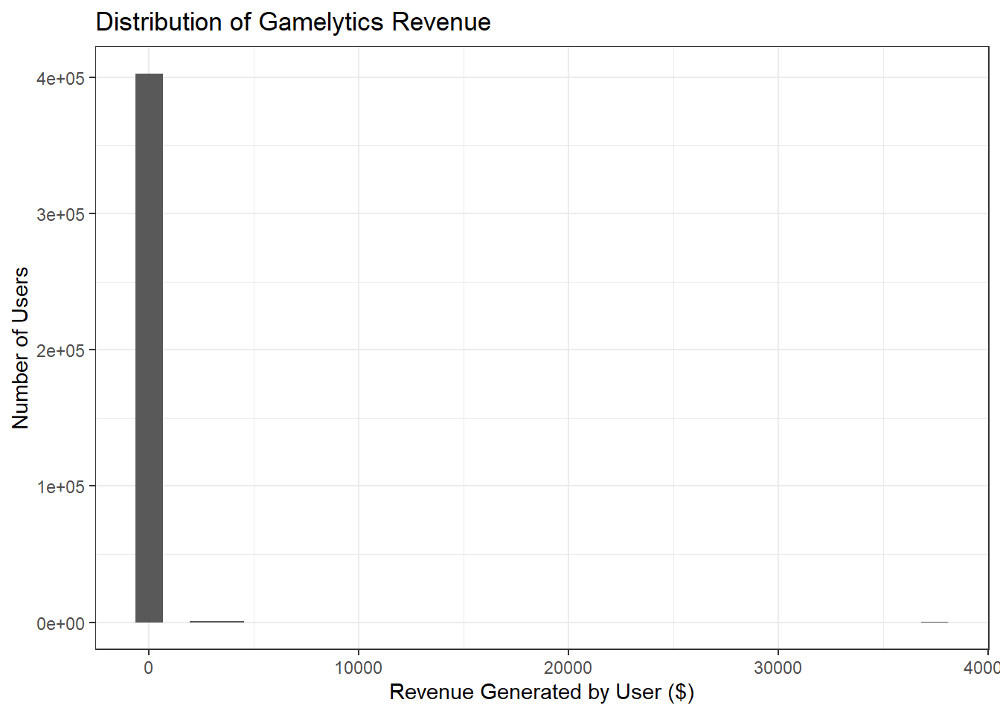
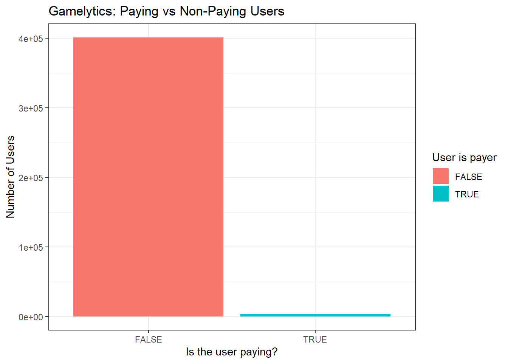
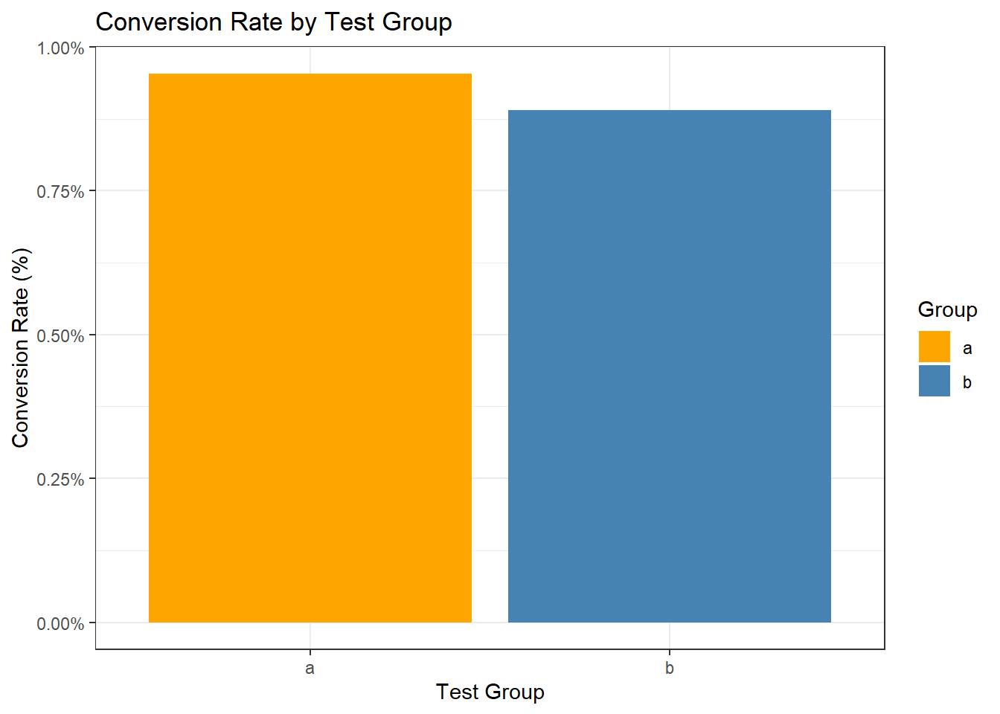
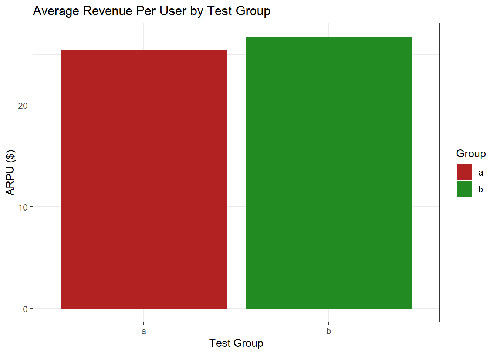
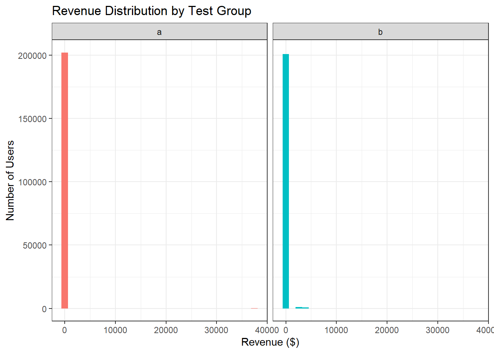
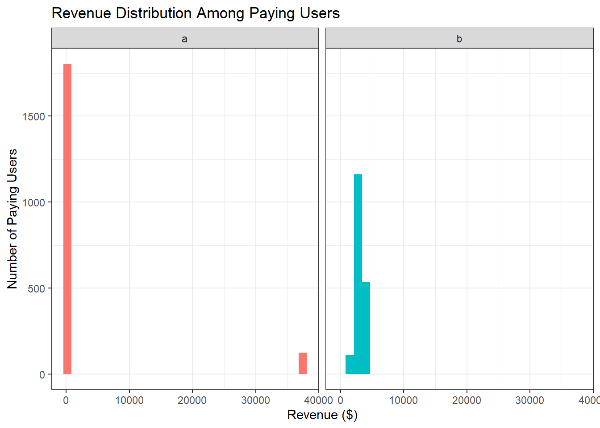

Goal: For the first portfolio, the goal is to use some of the tools we have learned in earlier modules and more to clean, summarize, and visualize a Gamelytics dataset from Kaggle. I will also try to evaluate whether a new promotional offer(the test group) improves user (player) outcomes compared to the current offer (control group) using A/B testing for the conversion rate and revenue per use, as suggested as part of the Kaggle challenges for this dataset. For the purpose of this protfolio, we are going to assume the revenue is in dollars as there is no indication of currency in the description.
Here is the link for the Kaggle Challenge: https://www.kaggle.com/datasets/debs2x/gamelytics-mobile-analytics-challenge?select=ab_test.csv
#Will start by loading all the packages I may be using for this.
library(tidyverse)
library(tidyr)
library(ggplot2)#Import a/b test data (csv, separated by semicolon; used delim)
library(readr)
ab_test <- read_delim(
"data/ab_test.csv",
delim = ";",
escape_double = FALSE,
trim_ws = TRUE
)## Rows: 404770 Columns: 3
## ── Column specification ────────────────────────────────────────────────────────
## Delimiter: ";"
## chr (1): testgroup
## dbl (2): user_id, revenue
##
## ℹ Use `spec()` to retrieve the full column specification for this data.
## ℹ Specify the column types or set `show_col_types = FALSE` to quiet this message.View(ab_test)#Do a quick check/poke around the dataset.
names(ab_test) #checking if the file is read correctly## [1] "user_id" "revenue" "testgroup"glimpse(ab_test)## Rows: 404,770
## Columns: 3
## $ user_id <dbl> 1, 2, 3, 4, 5, 6, 7, 8, 9, 10, 11, 12, 13, 14, 15, 16, 17, 1…
## $ revenue <dbl> 0, 0, 0, 0, 0, 0, 0, 0, 0, 0, 0, 0, 0, 0, 0, 0, 0, 0, 0, 0, …
## $ testgroup <chr> "b", "a", "a", "b", "b", "b", "b", "b", "b", "a", "a", "a", …Here is some quick guide to what each column is measuring:
user_id: A unique identifier for each user
revenue: The revenue generated by the user
testgroup: The group to which the user was assigned (object, e.g., “a” or “b”)
Quick check into the revenue data we have
summary(ab_test$revenue)## Min. 1st Qu. Median Mean 3rd Qu. Max.
## 0.00 0.00 0.00 26.08 0.00 37433.00It looks like the data is very spread out. Let’s visualize this.
ggplot(ab_test, aes(x = revenue)) +
geom_histogram() +
labs (
title = "Distribution of Gamelytics Revenue",
x = "Revenue Generated by User ($)",
y = "Number of Users"
) +
theme_bw()## `stat_bin()` using `bins = 30`. Pick better value `binwidth`.
The data is heavily right-skewed. A lot of people did not pay anything at all, while there is a very small number of people paying about less than $10,000. We have also seen that the maximum amount spent is a little under $40,000.
Next, I wanted to do a quick check into the test groups.
ab_test %>% count(testgroup)## # A tibble: 2 × 2
## testgroup n
## <chr> <int>
## 1 a 202103
## 2 b 202667Looks like the number of people in the two groups are pretty balanced, and we have a very large sample size for both groups.
Because there are only few people that have spent money, it’s not very helpful to visualize if they’re mixed together with the majority of the population which are non-payers. So, I am creating a new variable that shows who paid.
ab <- ab_test %>%
mutate (payer_user = revenue > 0)ab %>% count (payer_user)## # A tibble: 2 × 2
## payer_user n
## <lgl> <int>
## 1 FALSE 401037
## 2 TRUE 3733ab %>%
count(payer_user) %>%
ggplot(aes(x = payer_user, y = n, fill = payer_user)) +
geom_col() +
labs (
title = "Gamelytics: Paying vs Non-Paying Users",
x = "Is the user paying?",
y = "Number of Users",
fill = "User is payer"
) +
theme_bw()
Now that I have differentiated who is paying, I would like to take a look at the conversion rate (percent of users who pay) in both groups.
conv_rate_by_group <- ab %>%
group_by(testgroup) %>% #split the data into group a and b
summarise(
conversion_rate = mean(payer_user), #what proportion paid in each group
n_users = n(), #how many users in each group
.groups = "drop"
)We can see that there are 0.95% of paying users in test group ‘a’ and 0.89% paying users in test group ‘b’.
ggplot (conv_rate_by_group,
aes(x = testgroup,
y = conversion_rate,
fill = testgroup)) +
geom_col() +
scale_y_continuous(labels = scales::percent_format(accuracy = 0.01)) +
scale_fill_manual(values = c("a" = "orange",
"b" = "steelblue")) +
labs (
title = "Conversion Rate by Test Group",
x = "Test Group",
y = "Conversion Rate (%)",
fill = "Group"
) +
theme_bw()
Now that we know what percentage of users paid in each group, this doesn’t really tell us the full story. We only know that slightly more people paid in group ‘a’ But we would also want to know how much these paying users are spending.
I will calculate the average revenue spent per user (total revenue in group/total number of users in group).We are now incorporating th conversion rates with their level of spending.
ARPU_by_group <- ab %>%
group_by(testgroup) %>%
summarise(
ARPU = mean(revenue), #calculate the mean of revenue now (instead of paying user)
n_users = n ()
)ggplot(ARPU_by_group,
aes(x = testgroup,
y = ARPU,
fill = testgroup)) +
geom_col() +
scale_fill_manual(values = c("a" = "firebrick",
"b" = "forestgreen")) +
labs (
title = "Average Revenue Per User by Test Group",
x = "Test Group",
y = "ARPU ($)",
fill = "Group"
) +
theme_bw()
This is a bit interesting. Earlier the conversion rate calculation showed us that Group A has slightly more number of users that are paying. But, now we see that in Group B, there is slightly more money spent per user overall. This suggests that although slightly fewer users are making purchases in Group B, those who do may be spending more on average compared to Group A. It’s important to note that the outliers may be affecting our data though since our revenue distribution is really skewed.
ggplot(ab, aes(x = revenue, fill = testgroup)) +
geom_histogram() +
facet_wrap(~testgroup) +
labs(
title = "Revenue Distribution by Test Group",
x = "Revenue ($)",
y = "Number of Users"
) +
theme_bw() +
theme(legend.position = "none")## `stat_bin()` using `bins = 30`. Pick better value `binwidth`.
Let’s look at the spending patterns in the two groups, among those who paid.
ab %>%
filter(revenue > 0) %>%
ggplot(aes(x = revenue, fill = testgroup)) +
geom_histogram() +
facet_wrap(~testgroup) +
labs(
title = "Revenue Distribution Among Paying Users",
x = "Revenue ($)",
y = "Number of Paying Users"
) +
theme_bw() +
theme(legend.position = "none")## `stat_bin()` using `bins = 30`. Pick better value `binwidth`.
Now that we have seen some of the comparison metrics, let us test if the difference between the two groups is significant. We will use proportion testing since we are comparing proportions.
conv_table <- ab %>%
group_by(testgroup) %>%
summarise(
payers = sum(payer_user), #how many users paid
total = n() #how many uusers in each group
)prop_result <- prop.test(x = conv_table$payers, n = conv_table$total)
prop_result##
## 2-sample test for equality of proportions with continuity correction
##
## data: conv_table$payers out of conv_table$total
## X-squared = 4.3747, df = 1, p-value = 0.03648
## alternative hypothesis: two.sided
## 95 percent confidence interval:
## 3.952707e-05 1.227383e-03
## sample estimates:
## prop 1 prop 2
## 0.009539690 0.008906235From the analysis, we can see that a sample test for equality of proportions shows that the conversion rate for Group A (~0.95%) was significantly higher than in group B (~0.89%), χ²(1) = 4.37, p = .036. However, the magnitude of the effect is still very small (only about 0.06% difference).
arpu_test <- t.test(revenue ~ testgroup, data = ab)
arpu_test##
## Welch Two Sample t-test
##
## data: revenue by testgroup
## t = -0.62349, df = 240991, p-value = 0.533
## alternative hypothesis: true difference in means between group a and group b is not equal to 0
## 95 percent confidence interval:
## -5.542295 2.867161
## sample estimates:
## mean in group a mean in group b
## 25.41372 26.75129We can see that a Welch two-sample t-test indicates that the difference in average revenue per user between group A (M = 25.41) and group B (M = 26.75) was not statistically significant, t(240,991) = -0.62, p = .533. Eventhough group B exhibited a slightly higher mean revenue, the difference was small relative to overall variability in spending.
The Kaggle challenge was to decide which offer set performs best by determining the appropriate metrics for a robust evaluation.
Here, we tested two promotional offer designs across approximately 400,000 users. Group A resulted in a slighlty higher percentage of paying users (0.95% vs 0.89%). While the difference was statistically significant (perhaps due to the large size), the absolute difference between the two groups was only 0.06%. In terms of revenue generated per user, Group B generated slightly higher average revenue ($26.75 vs $25.41), but this difference wasn’t found to be statistically significant. Overall, I would argue that there is no strong evidence that either offer meaningfully outperforms the other in revenue impact.